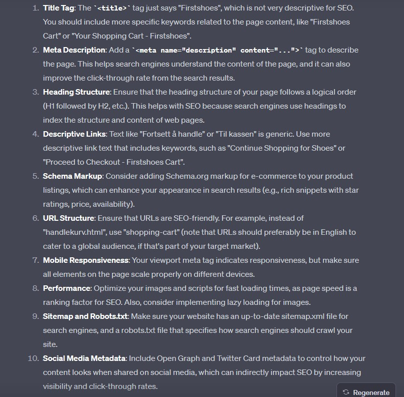

Nettside analyse
nøkkelord analyse
Til analysen er Google trends tatt i bruk for å finne relevante nøkkelord som er dagsaktuelt i Norge over de siste 30 dagene. Analysen tar mer for seg generell interesse enn geografisk da Firstshoes opererer kun på nett og leverer til hele landet.
Nøkkelord: Billige sko, sko salg, vintersko, vinterstøvler, Høstsko, Miljøvennlige sko, Skechers, Ecco
Tema: Årstider
Høstsko
Vintersko
vinterstøvler
Tema: Merker
Skechers
Ecco
Hooka
Populære sko
Tema: fordeler og bærekraft
Miljøvennlige sko
Gratis frakt
SEO og UU analyse med Google Lighthouse
SEO og UU analysen er gjennomført med Google Lighthouse i Google Chrome og tar for seg forsiden, produkt og handlekurv.
Forside
Forsiden er testet på mobil og desktop, resultatene viser at siden mangler meta description.
Resultatene fra UU testen på forsiden viser ingen feil eller mangler.
Produkt side
produktsiden er testet på mobil og desktop, resultatene viser at siden mangler meta description.
Resultatene fra UU testen på produktsiden viser at "skip-link" ikke er fokuserbar.
Handlekurv
Handlekurv er testet på mobil og desktop, resultatene viser at siden mangler meta description.
Resultatene fra UU testen på handlekurv viser at "skip-link" ikke er fokuserbar.
Performance & best practises Google Lighthouse
Performance analyse er gjennomført med Google Lighthouse og tar for seg forsiden, produkt og handlekurv.
Forside
Resultatene av performance på telefon gir en poengsum på 63 og 80 av 100 på Desktop.
Lighthouse mener forbedringstiltak innebærer å komprimere bilder, konvertere til Webp og bruke en server som støtter HTTP2.
Produkt side
Resultatene av performance for produktsiden gir en poengsum på 80 av 100
Som med forsiden er mindre bildestørrelser og konverting til webp anbefalte forbedringstiltak.
Handlekurv
Resultatene av performance for handlekurv gir en poengsum på 100 av 100 og gir ingen spesifikke tilbakemeldinger til forbedringstiltak
UU analyse med Webaim
Analyse for nettsidens universelle utforming er gjennomført med Webaim for forside, produkt og handlekurv. Det er tatt skjermbilder for oppsummering av resultatene.
Forside
Feilmeldinger: 2 av Feilmeldingene skyldes form input i header (søkemotor) og footer (nyhetsbrev) mangler label. Den siste feilmeldingen er et bilde som mangler en alt atributt, selv om Webaim ikke klarer å lokalisere hvor det er.
Kontrast: 1 advarsel om dårlig kontrast som skylder "skip-link" knappen som er usynlig.
Advarsler: 7 av advarslene skylder linker som går til samme side, hvert alle produktkort linker til samme produkt. 3 advarsler skyldes navigasjonsdotter i header slideren som benytter javascript ikke er fungerer med tabulator, og mangler form for kontekst for skjermlesere.
Produkt side
Feilmeldinger: De samme feilmeldingene som på forsiden, form inputs mangler labels og manglene alt atributt på et bilde som ikke kan lokaliseres.
Advarsler: Samme som forsiden, produktkort linkes til samme produktside.
Kontrast: "Skip-link" er usynlig når den ikke er fokusert.
Handlekurv
Feilmeldinger: 5 Feilmeldinger skylder form inputs som mangler labels, gjelder i header, footer og antall av hvert produkt i handlekurv. Siste feilmelding skylder et bilde som mangler alt atributt som ikke kan lokaliseres.
Advarsler: "Skip link" linker til en id "main" som ikke eksisteres på handlekurv siden.
Kontrast: "Skip-link" er usynlig når den ikke er fokusert.
SEO og UU analyse med ChatGPT
Har bedt ChatGPT (GPT4) å lese gå gjennom koden til forside, produkt og handlekurv og gi anbefalte forbedringstiltak til SEO og universell utforming. Har promptet til GPT på engelsk og spurt: "Act as a professional web developer and review this code for a webstore for shoes from an universal design and SEO perspective. Give me specific solutions on how it can be improved", etterfulgt av koden til hver side. ChatGPT sine tilbakemeldinger inneholder både tiltak som kan forbedres og allerede eksiteres på de ulike sidene.
Forside
Forside SEO
Bedre beskrevet title tag, inkludere meta description, microdata, sitemap og social sharing cards er noen spesifikke tiltak ChatGPT anbefaler for SEO. For hastghet anbefaler GPT å bruke srscet for ulike bildestørrelser på ulike enheter.

Forside UU
Forbedret bruk av aria-labels, button tag for interaktive elementer istedenfor span tag og labels for form inputs er forslag til UU forbedringstiltak fra chatGPT. For logo mener chatGPT ikke role="navigation" er nødvendig ettersom span class="logo" er beskrivende nok.
Produkt
Produkt SEO
Flere gode tiltak for SEO på produktsiden. De mest åpenbare er bedre beskrevet title tag og en godt beskrevet meta tag med description atributt. ChatGPT påpeker at H1 taggen ikke må skippes, en løsning vil være å bruke order slik at innholdet kommer først i html, men visuelt vises produktbildene først. Videre er det bedre navngiving av bilder, inkludere microdata, linke opp sider internt (hvis jeg hadde flere) og linke til sosiale medier.
Produkt UU
ChatGPT oppdaget at "skip-link" knappen ikke hopper til hovedinnhold, bedre alt beskrivelser på bilder, title beskrielser ikoner, manglende label for inputs, bedre fargekontrast og vise feilmeldinger til kjøpere er UU anbefalinger.
Handlekurv
handlekurv SEO
Som med forsiden og produkt, bedre beskrevet title og inkludere meta description. Bedre struktur for h tagger, mer tydlighet i knapper/linker, sitemap og linke opp sosiale medier er anbefalte SEO tiltak fra ChatGPT.
Handlekurv UU
Forbedrende UU tiltak er bedre beskrivende alt tekster på bilder, bedre tastaturnavigasjon, button tag for elementer med handlinger, label for inputs og fungerende "skip-link" knapp.
Sammenligning av resultater
ChatGPT |
Lighthouse |
Webaim |
|
|---|---|---|---|
| Meta tagger | Generisk og repeterende title tagger, mangler meta description, mangler sitemap. Sosiale medier tagger |
Manglende meta description. |
Reagerer ikke på manglende meta tagger. |
| tastaturnavigasjon | Enkelte knapper i slider, og øke/minke antall produkter i handlekurv må kunne bruke tastaturnavigasjon. Focus outline må være mer synlig. |
"Skip-link" er ikke fokuserbare på enkelte sider. |
"Skip-link" linker ikke til noen Id på produkt og handlekurv. |
| Semantikk | Mangler label tag for form inputs i header og footer på alle sider. Bedre heading struktur på produkt og handlekurv. Bruk av button tag istedenfor span på enkelte knapper. |
N/A |
Mangler label tag for form inputs i header og footer på alle sider. |
| Optimalisere bilder | Bruke srcset for å laste inn ulike bilder for skjermer, bruke lazy-loading. |
Mindre bildestørrelser, bruke WebP format, benytte eksplisitte verdier for bredde og høyde. |
N/A |
| Bildetekst og navn | Mer konkret navngivning av bilder og alternativ tekst. |
N/A |
N/A |
| Strukturert data | Microdata eller JSON-LD for lesbarhet. Spesifikke forslag som på breadcrumbs og produktinfo. |
Anbefaler strukturert data, men ikke som feilmelding eller advarsel. |
N/A |
| Responsivt design | N/A |
N/A |
N/A |
| Fargekontrast | Får ikke css koden, informerer om å validere fargekontrasten. |
N/A |
Kun dårlig fargekontrast i "skip-link" knapp. |
| Aria-labels | Mer aria-labels på interaktive elementer uten forklarende semantiske tagger. Unngå overforbruk av aria-labels der forklaring av et element er representert. |
Informerer om å bruke aria-labels på interaktive elementer uten forklarende tagger |
Informerer om at Aria-labels er representert på ulike sider. |
Forberdringstiltak
- Mer beskrivende title tag på produkt og handlekurv.
- Legge meta description tagg med relevant innhold på alle sider.
- Linke "skip-link" til riktig id slik at den fungerer på produkt og handlekurv.
- Bruke Srcset til å laste inn ulike bildestørrelser for ulik skjermoppløsning.
- Bruke WebP format istedenfor JPG på mindre bilder.
- Bruke label tag for bedre beskrivelser av form inputs, gjelder søkebar i header, nyhetsbrev påmelding i footer, og antall produkter i handlekurv.
- Bedre heading struktur. H1 på produkt siden må vises i koden før produktbilder, løsning er å bruke flex order til å endre rekkefølge slik at info kommer først, men visuelt etter produktbildene.
- Mer aria-labels på interaktive elementer uten spesifikke tagger eller beskrivelser. Unngå bruk av aria-labels på allerede beskrevet elemeneter som logo